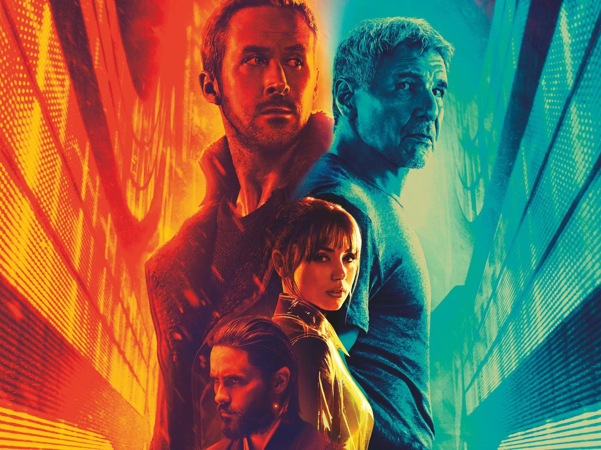

Theres are some skills I learned when doing this project
I wanted to create a project on the movie Blade Runner 2049 and why it's the greatest movie of all time.
Why I love this movie

Blade Runner 2049 is known for its incredible visuals and futuristic atmosphere.
The film uses stunning cinematography, lighting, and color to create a world that
feels both beautiful and mysterious. Every scene looks carefully designed, which
is one of the reasons the movie stands out and is remembered by so many fans.
This movie means so much to me because I saw it in the theater with my Dad after
coming home from a mission. It was my favorite movie when I was trying to be a film
major.
Blade Runner has awesome visuals
Contact Me
- tanner.mascaro9@gmail.com
- 435-210-4355
- 2401 N 1400 E Lehi, Utah